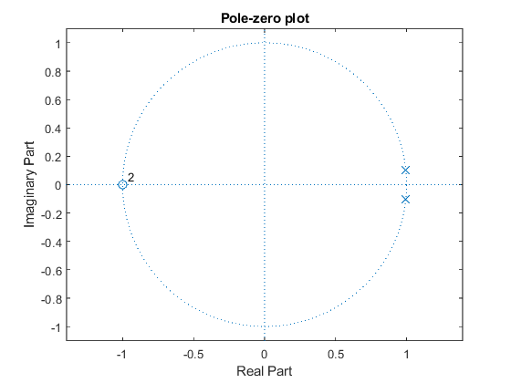

ELEC-E5620 Audio Signal Processing 2023, Demo project: Moog Ladder Filter
Pi, Wang, Benc
Implements and demonstrates nonlinearity by saturating different members of the difference equation of the second-order biquad filter.
References: [1] Configure the Coefficients for Digital Biquad Filters in TLV320AIC3xxx Family [online], 2010. Available: http://www. ti. com/lit/an/slaa447/slaa447. pdf. [2] Chowdhury, "STABLE STRUCTURES FOR NONLINEAR BIQUAD FILTERS,” Proceedings of the 23rd International Conference on Digital Audio Effects (DAFx-20), Vienna, Austria, September 8–12, 202.
Parameters: fc - Cut-off frequency (Hz). Q - Quality value (dB). fs - Sampling frequency (Hz). topology - Filter topology. Options: '0', ..., '9' - According to the chart attatched to the code. nonlinearity - Nonlinearity type. Options: 'soft' - Soft saturator. 'hard' - Hard saturator. 'tanh' - Tanh saturator. fs - Sampling frequency (Hz). inputSignal - Wave signal.
Output: normalizedOutputSignal - Nomalized filtered signal.
Contents
clear; clc; close all;
Parameters
fc=1000; Q=10; topology = '1'; nonlinearity = 'hard';
Input signal
% % Generate a logarithmic chirp signal % fs = 48e3; % t = 0:1/fs:10; % f0 = 20; % f1 = 20000; % y = chirp(t, f0, max(t), f1, 'logarithmic'); % audiowrite('samples/sweep.wav', y, fs); filename = 'samples/sweep.wav'; [inputSignal, fs] = audioread(filename);
Calculation of the biquad filter coefficients [1]
w=2*pi*fc/fs; alpha=sin(w)/(2*Q); b0=(1-cos(w))/2; b1=(1-cos(w)); b2=(1-cos(w))/2; a1=-2*cos(w); a2=1-alpha;
Stability test
Assuming that the corresponding linear filter is stable, the nonlinear feedback filter will be stable provided the absolute value of the derivative of fnn is always less than or equal to 1. [2]
b = [b0, b1, b2]; a = [1, a1, a2]; flag = isstable(b, a); figure; zplane(b, a); title('Pole-zero plot'); if flag==1 disp('Corresponding linear filter is stable.'); else disp('Corresponding linear filter is unstable.'); end
Corresponding linear filter is stable.
Nonlinearity function
Defining nonlinearity function used for saturation.
if nonlinearity=='soft' fnl = @(x) 3.*(1 ./ (1 + exp(-x))-0.5); elseif nonlinearity=='hard' fnl = @(x) (x < -1) .* -1 + (x >= -1 & x <= 1) .* x + (x > 1) .* 1; elseif nonlinearity=='tanh' fnl = @(x) tanh(x); else error('Invalid nonlinearity type.') end
Filtering
Applying the filtering based on the topology.
outputSignal = zeros(size(inputSignal)); for i=1:size(inputSignal, 2) for n = 3:length(inputSignal) switch topology case '0' outputSignal(n, i) = ... b0 * inputSignal(n, i) + ... b1 * inputSignal(n - 1, i) - ... a1 * outputSignal(n - 1, i) + ... b2 * inputSignal(n - 2, i) - ... a2 * outputSignal(n - 2, i); case '1' outputSignal(n, i) = ... b0 * inputSignal(n, i) + ... b1 * inputSignal(n - 1, i) - ... a1 * outputSignal(n - 1, i) + ... b2 * inputSignal(n - 2, i) - ... a2 * outputSignal(n - 2, i); case '2' outputSignal(n, i) = ... b0 * inputSignal(n, i) + ... b1 * inputSignal(n - 1, i) - ... a1 * outputSignal(n - 1, i) + ... fnl(b2 * inputSignal(n - 2, i) - ... a2 * outputSignal(n - 2, i)); case '3' outputSignal(n, i) = ... b0 * inputSignal(n, i) + ... fnl(b1 * inputSignal(n - 1, i) - ... a1 * outputSignal(n - 1, i)) + ... fnl(b2 * inputSignal(n - 2, i) - ... a2 * outputSignal(n - 2, i)); case '4' outputSignal(n, i) = ... fnl(b0 * inputSignal(n, i) + ... b1 * inputSignal(n - 1, i)) - ... a1 * outputSignal(n - 1, i) + ... fnl(b2 * inputSignal(n - 2, i)) - ... a2 * outputSignal(n - 2, i); case '5' outputSignal(n, i) = ... b0 * inputSignal(n, i) + ... b1 * inputSignal(n - 1, i) - ... fnl(a1 * outputSignal(n - 1, i)) + ... b2 * inputSignal(n - 2, i) - ... a2 * outputSignal(n - 2, i); case '6' outputSignal(n, i) = ... b0 * inputSignal(n, i) + ... b1 * inputSignal(n - 1, i) - ... a1 * outputSignal(n - 1, i) + ... b2 * inputSignal(n - 2, i) - ... fnl(a2 * outputSignal(n - 2, i)); case '7' outputSignal(n, i) = ... b0 * inputSignal(n, i) + ... b1 * inputSignal(n - 1, i) - ... fnl(a1 * outputSignal(n - 1, i)) + ... b2 * inputSignal(n - 2, i) - ... fnl(a2 * outputSignal(n - 2, i)); case '8' outputSignal(n, i) = ... fnl(b0 * inputSignal(n, i) + ... b1 * inputSignal(n - 1, i) - ... a1 * outputSignal(n - 1, i) + ... b2 * inputSignal(n - 2, i) - ... a2 * outputSignal(n - 2, i)); case '9' outputSignal(n, i) = ... fnl(b0 * inputSignal(n, i)) + ... b1 * inputSignal(n - 1, i) - ... fnl(a1 * outputSignal(n - 1, i)) + ... b2 * inputSignal(n - 2, i) - ... fnl(a2 * outputSignal(n - 2, i)); otherwise error('Invalid topology.'); end end end if any(isinf(outputSignal), 'all') error('outputSignal contains Inf value.') end
Normalization
Avoid clipping.
maxValues = max(outputSignal); minValues = min(outputSignal); absoluteMaxValue = max(max(abs(maxValues)), max(abs(minValues))); normalizedOutputSignal = outputSignal ./ absoluteMaxValue;
Results
% soundsc(normalizedOutputSignal, fs); % % [filepath, name, ext] = fileparts(filename); % newFilename = sprintf('%s/%s_%s_%s%s', filepath, name, topology, nonlinearity, ext); % audiowrite(newFilename, normalizedOutputSignal, fs);